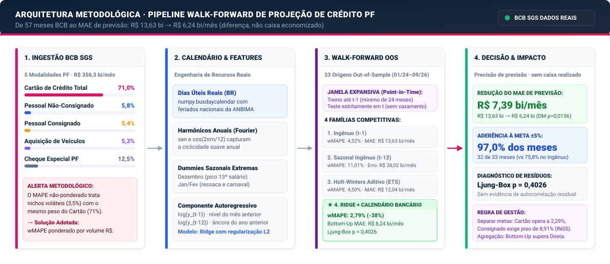

Redução do Erro de Projeção (MAE)
R$ 13,63 bi → R$ 6,24 bi
Redução de R$ 7,39 bi/mês (-54%) no desvio absoluto de projeção orçamentária (acurácia de planejamento, não economia direta de caixa).
Backtest walk-forward em janela expansiva de 33 origens out-of-sample (01/2024–09/2026) nas 5 maiores modalidades PF do BCB, comparando 4 famílias de modelos com wMAPE ponderado por volume, impacto financeiro em R$ bilhões e teste Ljung-Box de independência residual.
Desvios orçamentários mensais e descasamento de tesouraria causados pela variação do número de dias úteis e feriados bancários móveis entre meses consecutivos.
Substituir médias e projeções ingênuas por modelo Ridge autoregressivo sazonal com incorporação explícita do calendário de feriados nacionais ANBIMA em 33 origens de backtest.
Backtest walk-forward em 57 meses (01/2022–09/2026) sobre concessões do BCB SGS. Redução reflete precisão de planejamento orçamentário, não economia física de caixa.
Impacto no Erro de Orçamento, Comparativo dos Modelos e Séries Temporais
Todos os modelos treinados estritamente em janela expansiva point-in-time com dados disponíveis até o mês t-1.
| Modelo Avaliado | MAPE Prod. (Não-Pond.) | wMAPE Ponderado (R$) | Bottom-Up Agregado | Erro Orçamentário (MAE) | Meses na Meta ±5% | Ljung–Box p (Resíduos) |
|---|---|---|---|---|---|---|
| Sazonal Ingênuo (t-12) | 12,82% | 11,01% | 10,64% | R$ 38,02 bi/mês | 0,0% (0/33) | 0,0042 (viés) |
| Ingênuo (t-1) | 6,55% | 4,52% | 3,79% | R$ 13,63 bi/mês | 75,8% (25/33) | 0,0114 (viés) |
| Holt-Winters Aditivo (ETS) | 7,30% | 4,50% | 3,52% | R$ 12,04 bi/mês | 72,7% (24/33) | 0,0128 (viés) |
| Ridge Sazonal + Dias Úteis/Feriados ANBIMA | 4,72% | 2,79% (-38%) | 1,77% | R$ 6,24 bi/mês | 97,0% (32/33) | 0,4026 (Sem autocorr.) |
Para mensurar exatamente o quanto o calendário oficial ANBIMA acrescenta frente a modelos clássicos e a dias úteis ingênuos, decompomos a modelagem em 4 estágios cumulativos nas 33 origens out-of-sample:
| Estágio de Ablação | Features Utilizadas | MAE Orçamentário | MAPE Bottom-Up | wMAPE Ponderado |
|---|---|---|---|---|
| 0. Baseline Ingênuo (t-1) | Inércia do mês anterior | R$ 13,63 bi/mês | 3,79% | 4,52% |
| 1. Ridge Raw (Lags + Tendência) | log(y_{t-1}), log(y_{t-12}), tendência linear | R$ 9,52 bi/mês | 2,65% | 3,68% |
| 2. + Sazonalidade Anual | + harmônicos sen/cos + dummies Dez/Jan | R$ 9,42 bi/mês | 2,63% | 3,56% |
| 3. + Dias Úteis Comerciais | + contagem seg–sex sem feriados | R$ 7,47 bi/mês | 2,11% | 3,06% |
| 4. + Feriados Nacionais ANBIMA (Final) | + calendário bancário com feriados fixos e móveis | R$ 6,24 bi/mês | 1,77% | 2,79% |
Conclusão da ablação: O ajuste por feriados bancários oficiais reduz o erro de projeção em -R$ 1,23 bi/mês sobre a contagem simples de dias úteis, consolidando a redução total de -R$ 7,39 bi/mês (-54,2%) sobre a projeção ingênua.
Alterne entre a projeção em R$ bilhões e o erro mensal percentual com destaque para a banda de ±5%.

Explore o placar agregado entre os 4 modelos ou filtre o raio-x de erro dentro de cada uma das 5 linhas do BCB.

O script baixa ou lê do cache oficial as 5 séries mensais PF (20665–20713), calcula dias úteis reais brasileiros com numpy.busdaycalendar, executa o walk-forward completo em 33 origens e imprime todos os números deste relatório em JSON.
git clone https://github.com/carlosfelix06/carlosfelix06.github.io.git cd carlosfelix06.github.io/codigo/estudo-04-backtest-credito-pf python src/backtest_projecao_walkforward.py
Nota Técnica, Hipóteses dos Modelos e Limites do Estudo
Avaliar modelos de projeção financeira pelo MAPE médio simples por produto (unweighted) ou apenas frente a um baseline ingênuo induz dois erros graves de gestão: trata nichos pequenos e voláteis como equivalentes ao carro-chefe da carteira e deixa dinheiro na mesa por não explorar calendário nem sazonalidade.

Neste estudo auditamos 57 meses reais das 5 principais linhas livres e consignadas de Crédito PF do Banco Central (01/2022–09/2026, somando R$ 356,3 bilhões no mês mais recente) sob um protocolo walk-forward em janela expansiva (33 origens out-of-sample entre 01/2024 e 09/2026, treino mínimo de 24 meses) comparando 4 modelos competitivos: Ingênuo (t-1), Sazonal Ingênuo (t-12), Suavização Exponencial Holt-Winters Aditivo (ETS) e Ridge Sazonal + Calendário de Dias Úteis Brasileiros (log-AR + harmônicos anuais + dummies Dez/Jan-Fev + busday_count).
O resultado fecha a questão arquitetural: o modelo Ridge Sazonal + Calendário Bancário Nacional (ANBIMA) vence todos os competidores e reduz o erro absoluto médio de projeção (MAE Bottom-Up) de R$ 13,63 bilhões/mês (Ingênuo) e R$ 12,04 bilhões/mês (ETS) para R$ 6,24 bilhões/mês (redução de R$ 7,39 bilhões/mês no desvio de projeção orçamentária — medida de acurácia de planejamento de funding, e não economia direta de caixa — DM p = 0,0156), elevando o acerto dentro da meta de ±5% de 75,8% para 97,0% (32 de 33 meses) e removendo a autocorrelação residual detectável (Ljung-Box p = 0,0114 → 0,4026).
Foram coletadas diretamente da API oficial do Banco Central (api.bcb.gov.br, séries 20665 a 20713, R$ milhões nominais mensais) 5 modalidades de peso estrutural distinto na carteira PF (01/2022–09/2026):
| Modalidade BCB (SGS) | Participação Média no Volume | Volatilidade MoM Real (DP Δ%) |
Dinâmica Típica Observada |
|---|---|---|---|
| Cartão de Crédito Total PF | 71,0% | 5,95% | Forte dependência de dias úteis e varejo de dezembro |
| Pessoal Não-Consignado | 12,1% | 10,80% | Sensível a calendário útil e demanda sazonal |
| Pessoal Consignado Total | 8,7% | 18,31% | Saltos regulatórios abruptos (teto INSS e margem 5%) |
| Aquisição de Veículos PF | 4,7% | 9,85% | Ciclo automotivo, feirões e dias de emplacamento |
| Cheque Especial PF | 3,5% | 6,35% | Buffer rotativo de curto prazo com menor ruído mensal |
Todas as medições seguem execução rigorosamente point-in-time: para cada mês alvo t (33 origens a partir de 01/2024), o modelo é ajustado estritamente com dados até t-1, com zero vazamento futuro:
R$) e Erro Orçamentário Agregado (MAE em R$ bilhões/mês e %) comparando Bottom-Up (soma das 5 previsões individuais) contra Projeção Direta do Agregado no mesmo modelo.Ingênuo (t-1), (2) Sazonal Ingênuo (t-12), (3) Holt-Winters Aditivo ETS otimizado por L-BFGS-B em cada janela expansiva, e (4) Ridge Sazonal + Dias Úteis em log-nível com log(y_{t-1}), log(y_{t-12}), log(dias_uteis_t) via numpy.busdaycalendar (feriados nacionais fixos), harmônicos sen/cos(2πm/12), dummies Dezembro e Jan/Fev + tendência.Ridge vs Ingênuo, e teste Ljung–Box (lag=4) verificando se restou sinal temporal não capturado nos erros.| Modelo (Out-of-Sample) | MAPE Prod. (Não-Pond.) | wMAPE Ponderado (R$) |
Bottom-Up Agregado (MAPE) |
Erro Orçamentário (MAE R$ bi/mês) |
Origens dentro de ±5% |
Ljung–Box p (Resíduos) |
|---|---|---|---|---|---|---|
Sazonal Ingênuo (t-12) |
12,82% | 11,01% | 10,64% | R$ 38,02 bi/mês | 0,0% (0/33) | 0,0042 |
Ingênuo (t-1) |
6,55% | 4,52% | 3,79% | R$ 13,63 bi/mês | 75,8% (25/33) | 0,0114 |
Holt-Winters Aditivo (ETS) |
7,30% | 4,50% | 3,52% | R$ 12,04 bi/mês | 72,7% (24/33) | 0,0128 |
Ridge Sazonal + Dias Úteis/Feriados |
4,72% | 2,79% | 1,77% | R$ 6,24 bi/mês | 97,0% (32/33) | 0,4026 (Sem autocorr.) |
Para medir o ganho incremental de cada família de features no pipeline Bottom-Up sobre as 33 origens de teste:
| Estágio de Ablação | Features Utilizadas | MAE Orçamentário | MAPE Bottom-Up | wMAPE Ponderado |
|---|---|---|---|---|
| 0. Baseline Ingênuo (t-1) | Inércia do mês anterior | R$ 13,63 bi/mês | 3,79% | 4,52% |
| 1. Ridge Raw (Lags + Tendência) | log(y_{t-1}), log(y_{t-12}), tendência linear |
R$ 9,52 bi/mês | 2,65% | 3,68% |
| 2. + Sazonalidade Anual | + harmônicos sen/cos + dummies Dez/Jan |
R$ 9,42 bi/mês | 2,63% | 3,56% |
| 3. + Dias Úteis Comerciais | + contagem seg–sex sem feriados | R$ 7,47 bi/mês | 2,11% | 3,06% |
| 4. + Feriados Nacionais ANBIMA (Final) | + calendário bancário oficial com feriados fixos e móveis | R$ 6,24 bi/mês | 1,77% | 2,79% |
A inclusão do calendário ANBIMA gera uma redução adicional de -R$ 1,23 bi/mês no MAE frente aos dias úteis brutos e consolida a redução total de -R$ 7,39 bi/mês (-54,2%) sobre o baseline ingênuo.
Ingênuo → Ridge): O modelo reduz o MAPE em todas as cinco carteiras: Veículos (7,08% → 4,28%, -2,80 p.p.), Não-Consignado (7,84% → 5,52%, -2,32 p.p.), Cartão de Crédito (3,76% → 2,05%, -1,71 p.p. em 71% do volume), Consignado (10,49% → 8,90%, -1,59 p.p.) e Cheque Especial (3,60% → 2,86%, -0,75 p.p.).p <= 0,013), acusando calendário útil e feriados ignorados. O Ridge Sazonal + Dias Úteis/Feriados atinge LB stat = 4,03, p = 0,4026 (não rejeição de H0, indicando ausência de autocorrelação serial remanescente detectável) e vence formalmente no teste Diebold–Mariano (t = 2,55, p = 0,0156).Ridge (1,77% / MAE R$ 6,24 bi) vence a modelagem direta no agregado total (1,86% / MAE R$ 6,57 bi) porque elasticidades distintas a dias úteis/feriados e dezembro se anulam parcialmente quando agregadas antes do ajuste.1. Substituição obrigatória de média móvel/ETS por regressão de calendário: Em concessões mensais brasileiras, o número de dias úteis e o efeito de fim/início de ano dominam os ciclos locais. Holt-Winters ETS sem covariável de calendário entrega praticamente o mesmo erro do ingênuo (wMAPE 4,50% vs 4,52%); a inclusão de busday_count com feriados nacionais ANBIMA + harmônicos no Ridge entrega -38% de wMAPE (2,79%) e redução de R$ 7,39 bi/mês no erro absoluto de projeção (MAE).
2. Governança por wMAPE ponderado e metas diferenciadas por linha: Metas rígidas de ±5% funcionam no agregado (97,0% de cumprimento com o Ridge) e em Cartão (2,05% MAPE), mas são estatisticamente inviáveis no Consignado (8,90% residual devido a choques regulatórios exógenos no teto do INSS).
p = 0,5133 (zero sinal autocorrelacionado remanescente nos erros do agregado), qualquer redução adicional relevante no erro do Consignado (MAPE 8,91%) exige variáveis exógenas de política pública (datas de publicação de teto INSS e liberações de margem/FGTS), e não maior complexidade univariada.h = 1); os scripts e séries cacheadas em codigo/estudo-04-backtest-credito-pf/ permitem auditoria e execução local instantânea.